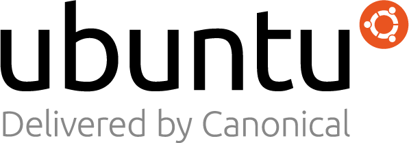

Terima Kasih Ubuntu Sebagai Sponsor Berlian!
2021-07-24T01:49:00+07:00
- Sartika Lestari

Kami dengan senang hati mengumumkan Ubuntu sebagai bagian dari Sponsor Berlian.
Destop Ubuntu seperti yang kita ketahui adalah platform workstation Linux yang paling banyak digunakan di dunia, mendukung pekerjaan para insinyur di seluruh dunia. Ubuntu saat ini memiliki banyak varian dan lusinan turunan khusus. Semua berbagi infrastruktur dan perangkat lunak yang sama, menjadikan Ubuntu sebagai platform tunggal unik yang menskala dari elektronik konsumen ke destop dan ke cloud untuk komputasi perusahaan.
Sebagai penerbit Ubuntu, OS untuk sebagian besar beban kerja cloud publik hingga robot canggih, Canonical menyediakan keamanan, dukungan, dan layanan perusahaan untuk pengguna komersial Ubuntu. Canonical bertanggung jawab untuk memberikan rilis enam bulanan dan rilis LTS reguler untuk penggunaan produksi perusahaan termasuk seluruh infrastruktur daring untuk interaksi komunitas. Perusahaan mengandalkan Canonical untuk mendukung, mengamankan, dan mengelola infrastruktur dan perangkat Ubuntu.
Dengan bergabung ke Ubucon Asia 2021, Ubuntu dan Canonical juga membantu dan mendukung komunitas dan siklus hidupnya untuk terus berkembang, berkolaborasi, berinovasi, dan berkontribusi pada open-source. Silakan periksa dan cari tahu lebih lanjut tentang Sponsor Berlian kami, Ubuntu di sini! Ingin menjadi salah satu sponsor kami? Lihat halaman ini untuk detail dan instruksi!
Jangan lupa reservasi dan datang ke Ubucon Asia 2021 pada tanggal 25-26 September. Lihat pendaftaran https://eventyay.com/e/75ac7f83

Sartika Lestari
Penyelenggara, Ubucon Asia 2021/Penyelenggara Acara Komunitas, OpenStack Indonesia